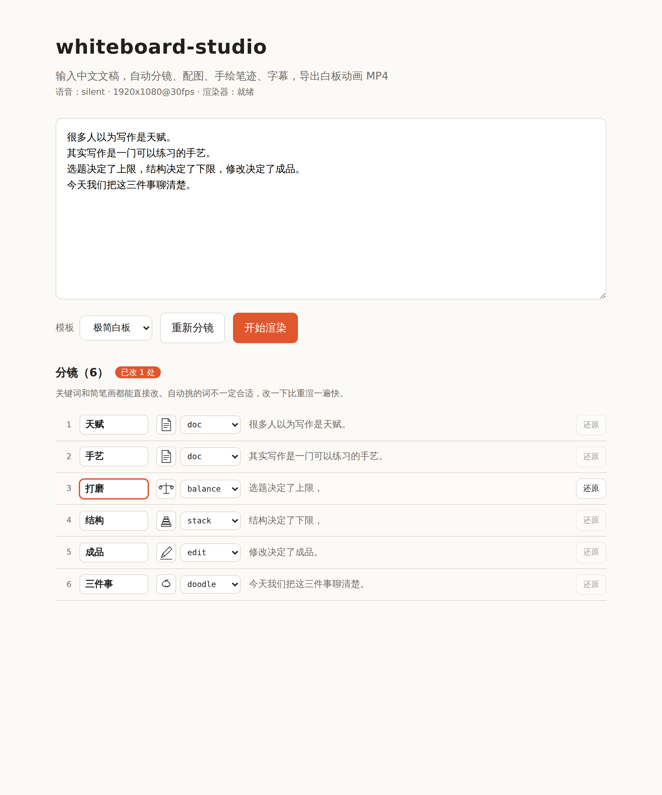

输入一段中文文稿，自动完成分镜 → 关键词 → 简笔画 → 手绘笔迹动画 → 字幕，导出 MP4。
在 GitHub 上查看 快速开始白板动画的观感全部来自「线条被一笔笔画出来」。实现方式是给 SVG 路径设
stroke-dasharray 等于全长，再把 stroke-dashoffset
从全长退到 0——线条就会从起点长出来。马克笔跟着笔尖走，笔尖坐标在挂载时
一次性采样，之后每帧查表，所以同一份数据重渲的结果完全一致。
流水线上有三个位置可以接外部服务，默认值全都是本地实现：
| 位置 | 默认 | 需要联网 | 做什么 |
|---|---|---|---|
| 分镜标注 | local | 否 | 自实现中文分词 + 词性打分挑词，触发词匹配选图 |
| 配图 | builtin | 否 | 32 个内置简笔画 + 关键词哈希涂鸦兜底 |
| 语音 | silent | 否 | 按字数估算每镜时长，不生成音频 |
这不是阉割版：本地标注器带一份 6.4 万条的中文词典（最大概率分词，约 40 行 DP）。 上面那段演示视频就是默认配置出的，标注耗时 0 秒。

关键词挑不准是启发式和大模型共同的问题，换个更强的模型解决不了。 实践下来，人工修正这一层比任何自动化都可靠——挑错了改一个词、换一张图，五秒钟的事。
都是 opt-in，不配就是本地实现。
接大模型一次请求标注全篇，按语义选图而不是靠触发词命中。实测同一段文稿， 兜底涂鸦从 1 镜降到 0，相邻重复的图消失。一个任务只调一次，成本可以忽略。
接 IndexTTS。推荐把模型跑成独立服务（仓库里带了参考实现），环境彻底隔离， 模型还能放到另一台有显卡的机器上。参考音频始终留在跑模型的那台机器上。
位图没法做「一笔一笔画出来」的动画，所以要先取中心线骨架转成笔迹。 实测可用率约一半——生图模型经常无视线稿约束，输出照片或实心色块， 这些东西中心线法表示不了。质量闸门会拒绝它们并退回内置简笔画。
视频渲染用的是 Remotion，它不是标准开源协议：
个人、非营利组织和 3 人及以下的公司免费，达到规模的公司商用需要购买 Company License。
项目里 render.py 是唯一和它耦合的文件，换 FFmpeg/Canvas 方案只需另写一个同签名的函数。